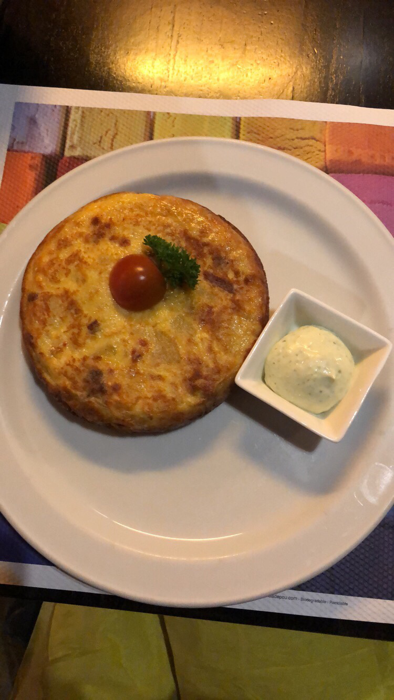
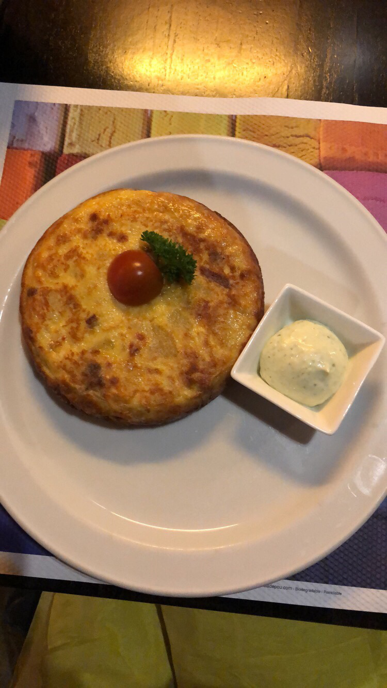

Madrid
From the arctic cold of Germany one weekend, to the Spanish sun the next right? Or at least that's what I was thinking when just a couple weeks ago I booked my flights to the Spanish capital. Well, I was also heading there to visit one of my good friends, Rika, who was studying with me in Brussels before going on to the second destination of her year abroad.
Friday 9th of March I head to my old faithful, Charleroi airport, where I've now sussed out the best choices for food and where one of the oh-so-rare sockets are, before getting on the 09:25 flight to Madrid. My friend Rika very kindly met me at the airport and we headed back to her flat together.
So, first things to do in Madrid? The palace? Retiro park? No, we decided to head across town to the most delicious doughnut place, which does incredible vegan doughnuts, and chill there whilst catching up and playing cards. It was a pretty rainy day in Madrid so relaxing indoors was definitely the best option.
 Next on the sightseeing list was heading back to her flat for a nap, because, lets be real, I had been up since 5am and needed to rest because we were planning to go out that evening.
We met up with some of Rika's friends at a bar in town and it was great getting to know them over a jug of sangria! The bar we went to was pretty cool and had a carousel horse inside. Also, I wasn't used to how in Spain you get given food with your drinks - I absolutely loved getting free olives and snacks every time! It was also interesting to learn that the idea of 'tapas' comes from the Spanish 'tapar' which means to cover, and that traditionally the tapas would be a chunk of bread to put over the glass to stop flies getting into your drink. I think I prefer the delicious range of mini dishes that we associate with the term today!
Next on the sightseeing list was heading back to her flat for a nap, because, lets be real, I had been up since 5am and needed to rest because we were planning to go out that evening.
We met up with some of Rika's friends at a bar in town and it was great getting to know them over a jug of sangria! The bar we went to was pretty cool and had a carousel horse inside. Also, I wasn't used to how in Spain you get given food with your drinks - I absolutely loved getting free olives and snacks every time! It was also interesting to learn that the idea of 'tapas' comes from the Spanish 'tapar' which means to cover, and that traditionally the tapas would be a chunk of bread to put over the glass to stop flies getting into your drink. I think I prefer the delicious range of mini dishes that we associate with the term today!
 I feel like I have to mention though, that I know absolutely zero Spanish. I've been told several times that because I study both French and Italian, Spanish should be easy because the three of them are all so similar, but for me this is not the case. Fortunately I had my excellent translator, Rika, who kept me right.
Although even she struggled to keep us right when it came to navigating our way through Madrid using the buses! There isn't an easy way to see the timetables online, and although google maps is slightly helpful, it's not good to know that the buses run every 30 mins without knowing when the next one is going to be! But we got pretty lucky most of the time and I didn't mind waiting at the bus stops because the buildings throughout the city are so beautiful.
Now, I can't write a blog about my time in Spain without saying more about the food! I was in Spain from very early Friday the 9th to even earlier on Monday the 12th, and for a lot of our meals we just cooked in Rika's flat. Although, one day, when we went out for lunch, I had the most delicious chorizo spanish omelette and then Rika and I shared a huge vegetable paella. We were absolutely starving at this point so I was very happy when it finally arrived ! (you normally have to wait around 20/30mins while they prepare the paella)

I feel like I have to mention though, that I know absolutely zero Spanish. I've been told several times that because I study both French and Italian, Spanish should be easy because the three of them are all so similar, but for me this is not the case. Fortunately I had my excellent translator, Rika, who kept me right.
Although even she struggled to keep us right when it came to navigating our way through Madrid using the buses! There isn't an easy way to see the timetables online, and although google maps is slightly helpful, it's not good to know that the buses run every 30 mins without knowing when the next one is going to be! But we got pretty lucky most of the time and I didn't mind waiting at the bus stops because the buildings throughout the city are so beautiful.
Now, I can't write a blog about my time in Spain without saying more about the food! I was in Spain from very early Friday the 9th to even earlier on Monday the 12th, and for a lot of our meals we just cooked in Rika's flat. Although, one day, when we went out for lunch, I had the most delicious chorizo spanish omelette and then Rika and I shared a huge vegetable paella. We were absolutely starving at this point so I was very happy when it finally arrived ! (you normally have to wait around 20/30mins while they prepare the paella)

 One of my favourite places we went to over the weekend was the botanical gardens near Retiro park. It was only 2 euros to get in and they have lemon trees, an avenue of olive trees and a big greenhouse filled with exotic cacti. I would definitely recommend this place because it was incredibly beautiful and yet so central.
One of my favourite places we went to over the weekend was the botanical gardens near Retiro park. It was only 2 euros to get in and they have lemon trees, an avenue of olive trees and a big greenhouse filled with exotic cacti. I would definitely recommend this place because it was incredibly beautiful and yet so central.
 Right next to the botanical gardens is Retiro park, which is the place I've seen most of online and in other people's photos. It was also very beautiful and the park itself is massive! If I lived in Madrid then I can imagine myself going there a lot, especially on warmer days! A lot of great places for photo opportunities!
Right next to the botanical gardens is Retiro park, which is the place I've seen most of online and in other people's photos. It was also very beautiful and the park itself is massive! If I lived in Madrid then I can imagine myself going there a lot, especially on warmer days! A lot of great places for photo opportunities!
 I enjoyed myself so much during this weekend which meant that the time passed annoyingly quickly, and before I knew it, it was time to start thinking about the flight home. My flight was at 06:35 from Madrid airport, but it co-ordinated well with Rika's plans because she had a flight to Scotland at around the same time, so we travelled to the airport together. Neither of us could deal with staying up all night, so I went for the nap for 2/3 hours plan and then get up in time to leave the flat at 3am. I think this system works best because I didn't actually feel too bad when I woke up - probably because I didn't make it anywhere close to deep sleep!
The perks of this are that I got to see this beautiful sunrise on the plane! But by the time I made it back into my room later that morning I was shattered and despite my good intentions, I did not wake up in time for my class at 1pm... (it's ok, it's Erasmus...)
As for my travelling adventures, I think this will be the last for a little while at least. This time next week I'll be heading back to Scotland for a couple weeks and then towards the end of April I know I have a couple presentations to prepare for. The semesters here really don't align with what I was used to back at Glasgow uni : everyone I know who is there at the moment are finishing up semester 2 right now, whereas I still have classes well into May. Although I am planning a weekend trip to visit another friend who's currently studying in Nijmegen!
I enjoyed myself so much during this weekend which meant that the time passed annoyingly quickly, and before I knew it, it was time to start thinking about the flight home. My flight was at 06:35 from Madrid airport, but it co-ordinated well with Rika's plans because she had a flight to Scotland at around the same time, so we travelled to the airport together. Neither of us could deal with staying up all night, so I went for the nap for 2/3 hours plan and then get up in time to leave the flat at 3am. I think this system works best because I didn't actually feel too bad when I woke up - probably because I didn't make it anywhere close to deep sleep!
The perks of this are that I got to see this beautiful sunrise on the plane! But by the time I made it back into my room later that morning I was shattered and despite my good intentions, I did not wake up in time for my class at 1pm... (it's ok, it's Erasmus...)
As for my travelling adventures, I think this will be the last for a little while at least. This time next week I'll be heading back to Scotland for a couple weeks and then towards the end of April I know I have a couple presentations to prepare for. The semesters here really don't align with what I was used to back at Glasgow uni : everyone I know who is there at the moment are finishing up semester 2 right now, whereas I still have classes well into May. Although I am planning a weekend trip to visit another friend who's currently studying in Nijmegen!
 Keeping in line with my blog catch up, I will be posting again on Friday about my recent trip to Liège for a concert!
À bientôt!
Keeping in line with my blog catch up, I will be posting again on Friday about my recent trip to Liège for a concert!
À bientôt!